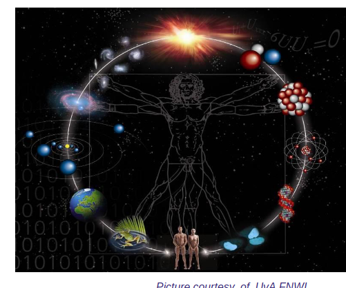

https://fasterdata.es.net/performance-testing/DTNs/?_gl=1*9i4pip*_ga*MTE0OTY4MzI2My4xNzMyMTA0Njc3*_ga_9Y9H16804B*MTczMjEwNDY3Ni4xLjAuMTczMjEwNDY3Ni4wLjAuMA..
| ["145.100.32.32","perfsonar-bandwidth.grid.surfsara.nl"] |
|---|
| 100G, ALICE, ASTRON, ATLAS, Auger Collaboration, LHCONE, LHCOPN, LHCTier1, LHCb, LOFAR |
|---|
| mgmt.grid.surfsara.nl, surfsara.nl, grid.surfsara.nl |
|---|
Bundle protocol
https://bib.ietf.org/public/rfc/bibxml/reference.RFC.5050.xml
https://www.rfc-editor.org/errata/rfc5050
(DNA);
sciences from linguistics to even
phobia studies);

Tijd en frequentiesignalen Lofar
https://www.surf.nl/en/themes/network/surf-timefrequency-pilot
https://gpsjam.org/?lat=58.73335&lon=21.64347&z=5.1&date=2024-07-09
https://servicedesk.surf.nl/wiki/pages/viewpage.action?pageId=111706381
https://en.wikipedia.org/wiki/Identifier
https://datatracker.ietf.org/doc/rfc5050/
Ruimtenetwerken verschillen van sensor netwerken